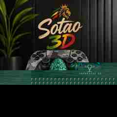

Autorais
Peças concebidas e desenvolvidas por nós.
Impressões 3D autorais e personalizadas, feitas principalmente sob encomenda.
Você traz a ideia. Nós podemos desenvolver, adaptar, personalizar, prototipar e transformar o projeto em uma peça real.

Do imaginado ao real — com criação, personalização e fabricação.
Powered by NEXA StudioUma encomenda que combina função e identidade: suporte para controle de PS5 com uma máscara samurai como elemento central.
Tem uma ideia parecida?
Podemos partir de uma referência e desenvolver uma solução para você.
O catálogo é uma vitrine de possibilidades. A produção é orientada principalmente por encomendas e projetos personalizados.
Peças concebidas e desenvolvidas por nós.
Peças modificadas para uma pessoa, ocasião ou tema.
Projetos desenvolvidos para uma necessidade específica.
Personagens, miniaturas e peças para colecionadores.
Você não precisa saber modelar em 3D. Podemos começar com conversa, foto, desenho, referência, modelo ou necessidade.
Ideias, design, criação visual, desenvolvimento e preparação dos projetos.
Prototipagem, impressão, acabamento, qualidade e materialização.
Conte o que você imaginou. Uma referência simples já pode ser o começo de um projeto personalizado.